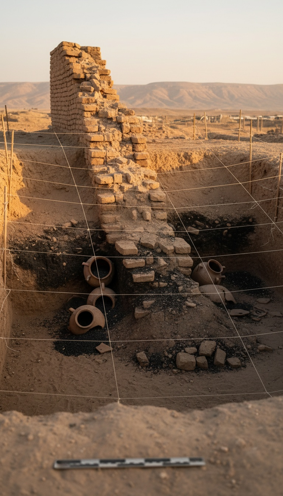

Every siege in ancient history ended with walls collapsing inward under the weight of attackers. At Jericho, the wall fell the other way, and the grain jars were still full when the fire hit them.
Two anomalies. One tell. And a dig record that nobody wants to say out loud.

The Wall That Fell the Wrong Direction
In 1907, German archaeologists Ernst Sellin and Carl Watzinger began the first serious excavation of Tell es-Sultan, the mound identified as biblical Jericho in the lower Jordan Valley, about ten kilometers northwest of the Dead Sea.
They found something that did not match any siege they knew. The mudbrick city wall had collapsed at the base of the tell, sloping outward and downward, forming a natural ramp of debris against the retaining wall of the stone revetment.
Sieges do not work that way. Assyrian reliefs from Nineveh, now in the British Museum in London, show battering rams punching inward. Lachish, Nimrud, Ashur. Walls always fall toward the defenders, never away from them.
John Garstang and the Burn Layer
British archaeologist John Garstang excavated Tell es-Sultan between 1930 and 1936 for the Marston-Melchett expedition. His field notes, archived at the Palestine Exploration Fund in London, describe a layer he labeled City IV.
City IV was buried under a destruction stratum roughly one meter thick. Ash, charred timber, collapsed brick. Garstang wrote in his 1940 book The Story of Jericho that the walls had "fallen outwards so completely that the attackers would be able to clamber up and over their ruins into the city."
He dated the destruction to around 1400 BCE and connected it directly to Joshua 6. The academic reaction was swift and hostile.
Kathleen Kenyon Redates the Site
Between 1952 and 1958, British archaeologist Kathleen Kenyon returned to Tell es-Sultan with the British School of Archaeology in Jerusalem. Her stratigraphic method, cutting narrow trenches through the tell, became the gold standard for Levantine archaeology.
Kenyon confirmed the outward collapse. She confirmed the burn layer. She confirmed the destruction of a Middle Bronze Age city. Her disagreement was the date. She pushed the fall back to roughly 1550 BCE, blamed the Egyptian pharaoh Ahmose I, and declared the city empty by Joshua's traditional time.
Her pottery samples are still held at the British Museum and the Institute of Archaeology at University College London. The bricks are still fallen outward. The date is what she moved.
The Jars Nobody Emptied
Both Garstang and Kenyon reported the same impossible detail in their field logs. Storage jars in the destruction layer, sealed, upright, and full of carbonized grain.
A besieging army takes the grain. A starving city eats the grain. At Jericho the grain sat sealed in jars until the fire came, and nobody touched it.
Kenyon's 1957 report Digging Up Jericho documents dozens of jars packed with charred wheat and barley in the burn stratum. She called the quantity "unusual." That is the understatement of twentieth-century archaeology.
Grain was currency in the Bronze Age. A jar of wheat could buy a slave. The Amarna letters, tablets from the Egyptian archive at Tell el-Amarna now split between the Vorderasiatisches Museum in Berlin and the British Museum, show Canaanite kings begging pharaoh for grain shipments. Nobody left grain behind. Ever.
Bryant Wood and the Receipts Nobody Wants
In 1990, American archaeologist Bryant Wood published a peer-reviewed article in Biblical Archaeology Review titled "Did the Israelites Conquer Jericho?" He reexamined Kenyon's own ceramic evidence.
Wood found Cypriot bichrome ware pottery in the destruction layer that Kenyon herself had missed or misdated. That ware type is diagnostic of the Late Bronze Age I, around 1400 BCE. He also cited radiocarbon dating of charcoal from City IV that Kenyon had not tested. The 1995 carbon-14 analysis by Hendrik Bruins and Johannes van der Plicht in the journal Radiocarbon returned dates clustering around the sixteenth century, still contested, but not conclusive against Wood.
Three details converge in the destruction layer at Tell es-Sultan. Walls fallen outward, forming a ramp. A city burned rather than looted. Grain sealed in jars, scorched but full. Joshua 6 lists the same three details in the same order.
The Short Siege Problem
Bronze Age sieges lasted months or years. The Assyrian siege of Lachish under Sennacherib in 701 BCE, documented on the palace reliefs now in Room 10b of the British Museum, took most of a campaign season. Masada under the Romans took nearly three years.
Jericho's destruction layer shows no siege ramps built by attackers, no arrowheads clustered at breach points, no evidence of prolonged encampment outside the walls. The Italian-Palestinian excavations led by Lorenzo Nigro of Sapienza University of Rome, ongoing since 1997, have not found them either. Nigro's team confirmed the outward collapse in publications from 2010 and 2019.
Joshua 6:15 says the city fell on the seventh day. A week is not enough time to starve a population that had just brought in its harvest. Joshua 6:24 says the Israelites burned the city with fire, and Joshua 6:17 says everything in it was devoted to destruction, meaning nothing was to be taken as plunder.
Full grain jars. Burned city. Walls fallen outward. Short duration. Four data points from a dig report that read like a checklist against a text written centuries later.
The mainstream position is that Kenyon's date settles the question and the biblical account is late propaganda from the Judahite monarchy. Fine. But Kenyon never disputed the outward collapse. She never disputed the burn layer. She never disputed the full grain jars. She moved the calendar and left the anomalies exactly where Garstang found them.
A wall that fell the wrong way. A harvest nobody touched. A city that burned in a week. If it was not Joshua, then some other event in the Bronze Age Jordan Valley broke every rule of siege warfare we have ever documented, and the excavators who found it spent fifty years arguing about the date instead of asking what actually happened.
What kind of army takes a walled city in seven days, refuses the grain, and leaves the bricks pointing the wrong direction?
Before you go
7 books the Vatican doesn't want you reading. Free PDF — the texts they cut, with sources. Joined by 140+ Inner Circle members.
No spam. Unsubscribe anytime.
Go deeper
The Hidden Canon, Vol. I — Enoch. Jubilees. Thomas. Mary. Judas. 90 pages, 14 chapters, every receipt cited. The books your Bible quietly removed.
Read the Canon →Books that informed this investigation
As an Amazon Associate, Hidden Epoch earns from qualifying purchases. Cost to you: nothing.
Research safely
The VPN we use to research without being tracked. First 3 months free.
Get NordVPN →